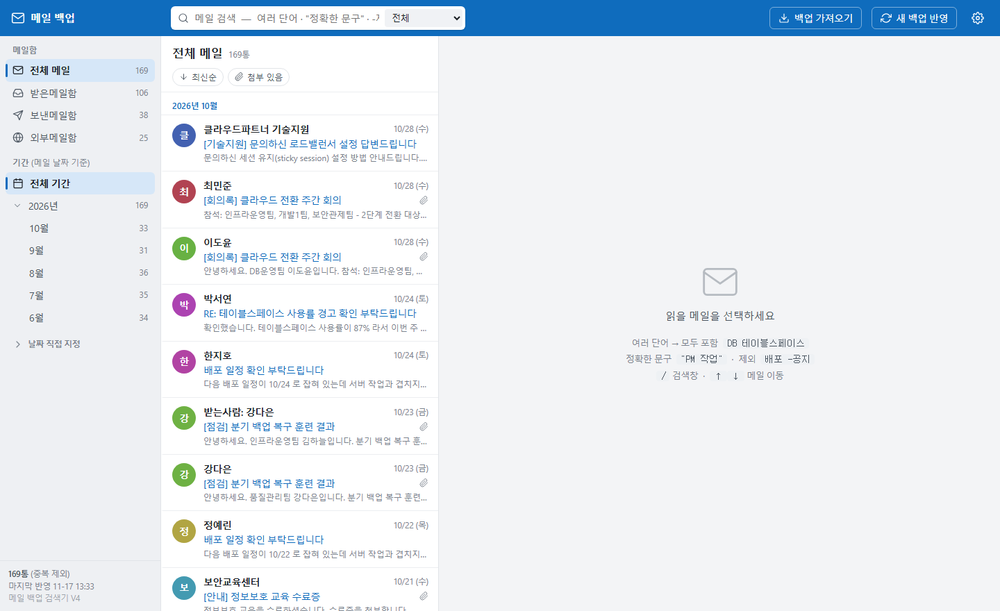
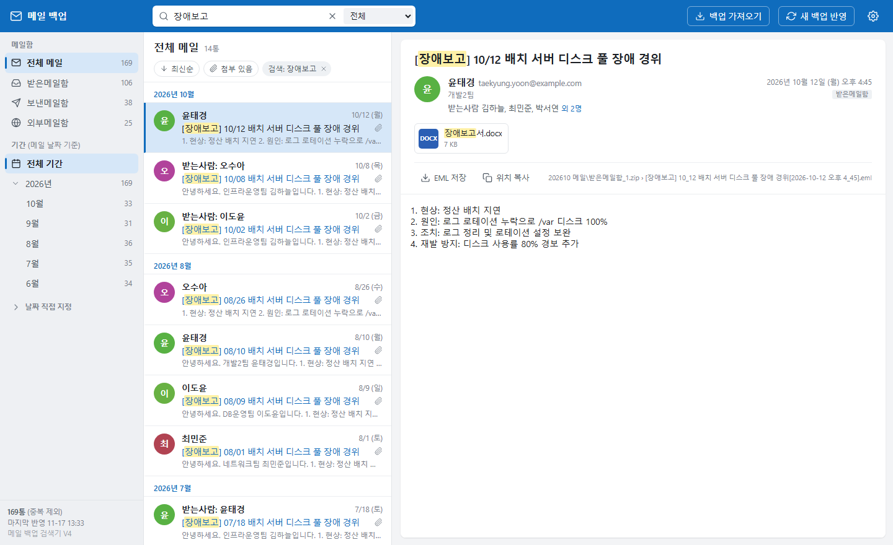

보안 정책상 메일 서버에는 최근 메일만 남고, 지난 메일은 매달 초 전월 메일 백업(zip) 으로 받습니다. 업무 중 예전 메일을 찾아야 할 때마다 백업을 뒤져야 했고, 이 과정이 반복될수록 시간이 많이 들었습니다.
.eml 수백 개를 직접 열어 확인ks_c_5601-1987) 때문에 파일명·본문이 자주 깨짐| 기능 | 내용 |
|---|---|
| 압축 해제 없는 색인 | zip(중첩 zip 포함)과 풀린 .eml 을 그대로 읽어 SQLite 에 저장. 새로 들어오거나 바뀐 파일만 다시 읽는 증분 색인 |
| 검색 | 여러 단어 AND, "정확한 문구", -제외어. 제목·보낸사람·받는사람·본문·첨부파일명 범위 지정, 메일함·연월 필터 |
| 3단 화면 | 메일함과 연·월 트리 / 월별로 묶인 메일 목록(무한 스크롤) / 검색어가 강조된 본문 미리보기. 키보드 이동 지원 |
| 첨부 · 원본 | 첨부 파일 저장, 본문 속 이미지 표시, 원본 .eml 저장(Outlook 에서 열림), 백업 안 위치 복사 |
| 백업 가져오기 | 받은 zip 을 고르면 메일 날짜로 연월을 판단해 YYYYMM 메일 폴더로 복사하고 바로 반영 |
| 자동 가져오기 | 다운로드 폴더에 새 백업이 생기면 5분 안에 자동으로 복사·반영 (선택 기능) |
| 배포 · 운영 | Python 내장 배포 zip, 바탕화면 바로가기, 로그인 시 창 없이 자동 실행, 주소로 바로 검색(#q=검색어) |

Message-ID 기준으로 하나만 보여 줍니다.mail_search.py 하나, 화면은 index.html 하나. 프레임워크와 외부 패키지 없이 만들어 배포와 보안 검토를 단순하게 했습니다.| 파일 | 역할 |
|---|---|
| mail_search.py | HTTP 서버 · 색인기 · 검색 · 가져오기 (약 1,300줄) |
| web/index.html | 화면 (HTML/CSS/JS 한 파일) |
| make_dist.py | 배포 zip 생성. 허용 목록 방식, 개인 파일이 섞이면 중단 |
| make_demo.py | 시연·스크린샷용 가상 메일 백업 생성 |
| *.bat | 실행, 바탕화면 바로가기, 로그인 자동 실행 켜기/끄기 |
ks_c_5601-1987 을 선언하지만 실제로는 CP949 확장 문자를 사용. zip 은 UTF-8 플래그가 없으면 Python 이 cp437 로 해석cp949 로 매핑하고, zip 파일 이름은 cp437 → cp949 로 되돌림. "이름(영문)/팀" 형식 주소가 표준 파서에서 잘리는 문제는 헤더를 직접 정리해 해결http.server 가 켜는 SO_REUSEADDR 가 Windows 에서는 사용 중인 포트에도 바인딩을 허용SO_EXCLUSIVEADDRUSE 를 쓰도록 서버 클래스를 수정. 이미 떠 있으면 조용히 끝내거나 기존 화면을 열도록 처리chcp 65001, CP949 저장 모두 일부 환경에서 실패powershell -EncodedCommand(UTF-16LE Base64)로 표시. 빌드 스크립트가 bat 의 ASCII·CRLF 를 검사(1) 이름, 원본 보존Date 헤더만 최대 300통 읽어 연월 판단. 1분간 변화 없는 파일만 처리, 내용 해시(SHA-256) 가 같으면 건너뜀, 원본은 복사만 하고 유지메일 원문을 다루기 때문에, 외부 공격자뿐 아니라 같은 PC 에서 열린 다른 웹페이지도 위협으로 보고 설계했습니다.
| 위협 | 대응 |
|---|---|
| 같은 네트워크의 다른 PC | 127.0.0.1 에만 바인딩 |
| DNS 리바인딩 | Host 헤더가 127.0.0.1 / localhost 가 아니면 거부 |
| 요청 위조 (CSRF) | 모든 POST 에 커스텀 헤더 필수 + Origin 검사 |
| 메일 본문 속 스크립트 | sandbox iframe + Content-Security-Policy: default-src 'none' |
| 위험한 첨부 파일 | 일부 이미지만 화면에 표시, 나머지는 항상 다운로드 (nosniff) |
| 임의 경로 접근 | 가져오기는 서버가 띄운 파일 선택 창이 돌려준 경로만 허용 |
| 개인 데이터 유출 | 색인 DB·설정은 배포 zip 과 git 에서 제외 (허용 목록 + 빌드 시 검사) |